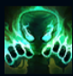
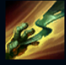
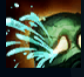
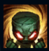
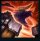

Amumu
| Amumu The Sad Mummy | |
|---|---|
| Release date | 26.06.2009 |
| Class | Vanguard |
| Positions | Jungle |
| Resource | Mana |
| Range type | Melee |
| Adaptive type | Magic |
| Base statistics | |||
| Health | 613 – 1973 | Mana | 285 – 965 |
| Health regen. | 9 – 23.45 |
Mana regen. | 7.382 – 16.31 |
| Armor | 30 – 94.6 | Attack damage | 53 – 117.6 |
| Magic resist. | 32 – 53.25 | Crit. damage | 175% |
| Move. speed | 335 | Attack range | 125 |
Legendele spun că Amumu este un suflet singuratic și melancolic din imperiul antic al Shurimei, care străbate lumea-n lung și-n lat pentru a-și găsi un prieten. Un blestem străvechi l-a condamnat să rămână pe veci singur: atingerea sa înseamnă moarte, iar afecțiunea sa, năruirea tuturor speranțelor. Cei care susțin că l-au văzut îl descriu ca pe un cadavru readus la viață, mic de statură și acoperit cu bandaje. Amumu a inspirat nenumărate mituri, cântece și povești din folclor transmise din generație în generație, astfel încât nimeni nu mai poate ști acum care este adevărul. |  |
ATINGERE BLESTEMATĂ Atacurile de bază ale lui Amumu blestemă inamicii. Atunci când li se provoacă daune magice, aceștia suferă daune reale bonus. |
||
|---|---|---|---|---|
 |
ARUNCAREA BANDAJULUI Amumu aruncă în direcția țintei un bandaj adeziv, apoi se trage spre ea, o amețește și îi provoacă daune. |
|||
 |
DISPERARE Copleșiți de panică, inamicii din apropiere pierd în fiecare secundă un procent din viața maximă, iar durata blestemelor aruncate asupra lor se resetează. |
|||
|  |
FURIE Reduce în mod permanent daunele fizice pe care le-ar suferi Amumu. Amumu își poate dezlănțui furia pentru a le provoca daune inamicilor din jur. De fiecare dată când Amumu e lovit, timpul de reactivare al abilității se reduce cu 0,5 secunde. |
|||
 |
BLESTEMUL MUMIEI TRISTE Amumu prinde în bandaje unitățile din apropiere, blestemându-le, provocându-le daune și amețindu-le. |